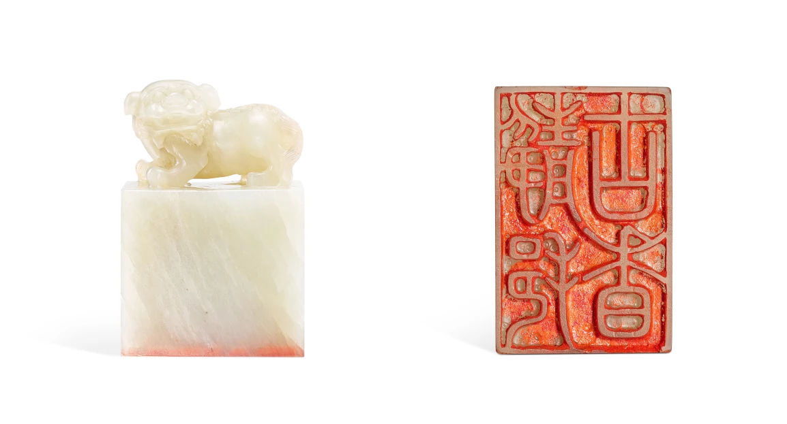
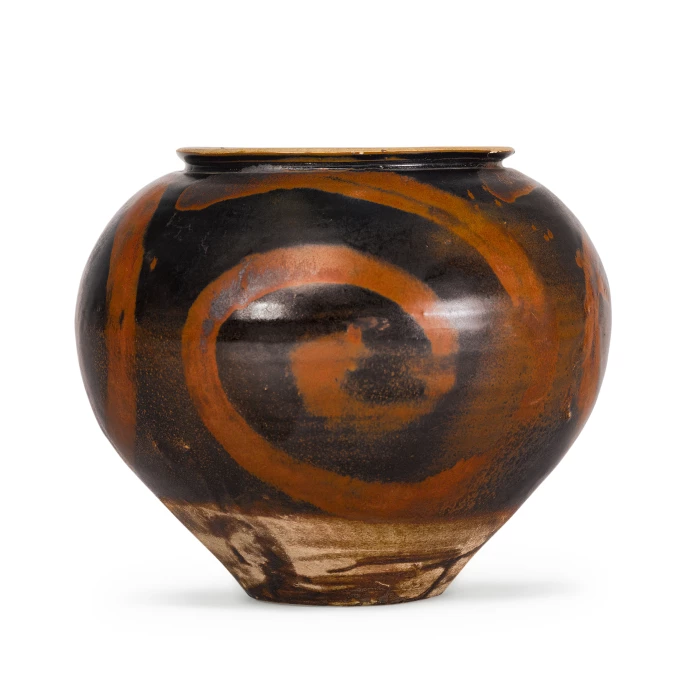
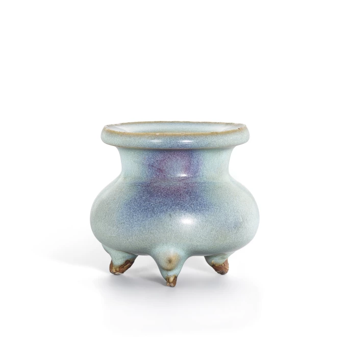
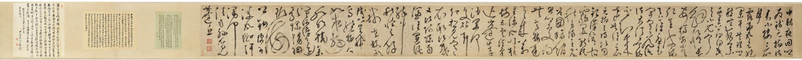
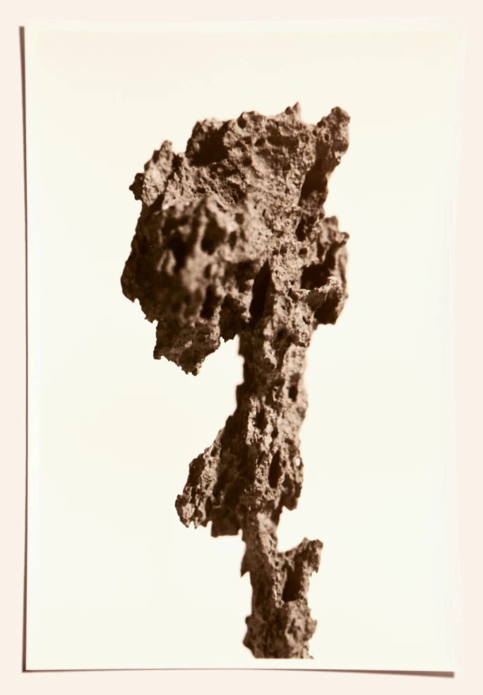
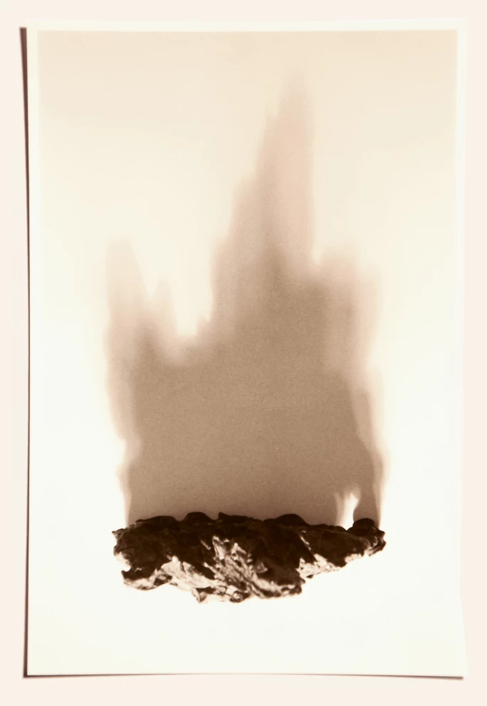
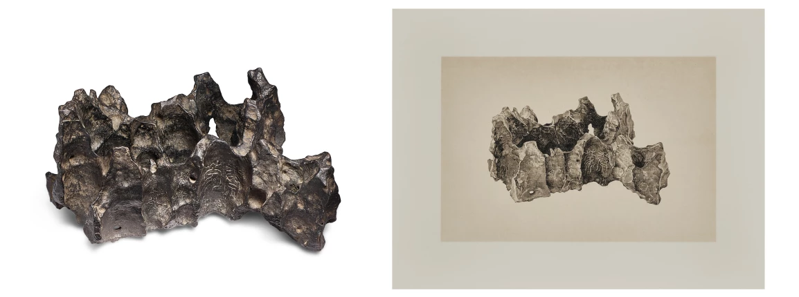
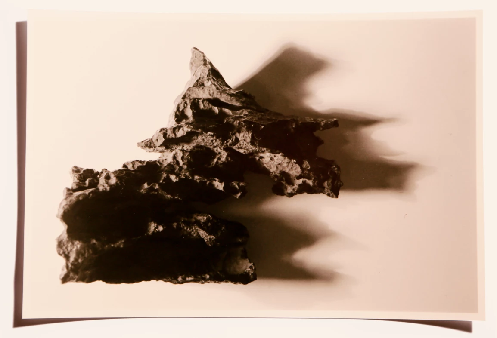

譯自 Nicholas Stephens · Sotheby's Hong Kong · 2023年3月9日
策展人Nicholas Stephens以古代道家哲學為起點，探討中國藝術的不朽魅力。
中國藝術博大精深，既有宋代精巧簡樸的陶瓷，亦有巧飾繁麗的清宮瓷器，包羅萬有，教人目不暇給。同時，它亦見證著歷史的無數篇章，反映出當時的創作環境和社會階級。觀今宜鑑古，無古不成今。藉著觀賞昔日的中國藝術品，我們發現古時哲理精神放諸現今世界仍能引起共鳴。
豐富多彩的中國藝術
中國瓷器市場在西方有著悠久的歷史：1921 年，東方陶瓷協會在倫敦成立，在歐洲和美國兩地栽培了一個收藏群體；朱湯生（Julian Thompson）先生 1973 年在香港舉辦的首場蘇富比拍賣，亦是破天荒之舉，亦反過來印證英國人對中國陶瓷長久以來的嚮往。
不過，隨著中國藝術成為蘇富比在亞洲業務的基石，加上 1990 年代後期具極高鑒賞力和對收藏興趣盎然的中國藏家湧入市場，陶瓷獨步市場的地位在接下來數年開始有變。藏家涉獵的不再只是瓷器，還有翡翠雕刻、皇家印章、書法和繪畫等。

清乾隆 乾隆帝御寶青白玉立獅鈕璽 印文：靜挹古香 | 估價 2,000,000-3,000,000 港元
中國藝術之所以魅力歷久不衰，是因為它豐富多彩，蘊含極深意蘊和文化。要深諳中國藝術，就先要明白它何其博大精深，當中學問多如恆河沙數；要打破一些過於簡單的錯誤觀念，先要了解貫穿中國歷史的語言和思想體系。
「中國藝術的概念以連續延伸的形式存在」—— 蘇富比亞洲區主席、中國藝術品部國際主管兼主席仇國仕（Nicolas Chow）說道。仇國仕先生認為，縱使朝代興衰更迭，陶瓷、玉器和青銅工藝經千秋洗禮後，仍然一脈相承。
雖然水墨、玉器、陶瓷和青銅等五花八門的中國藝術市場不免受潮流影響，但當中承載的情懷和意義依然深遠。古代文人雅士珍愛的供石的價值雖仍被低估，但隨著人們鑑賞力日趨成熟，可預想這個市場會越趨重要。生活在現今世界的觀眾或會在這些渾然天成的大自然珍品中領略到道家智慧，從微觀見宏觀，由物質空間抵達精神空間。

北宋 黑釉鐵繡花渦紋罐 | 估價 10,000,000-12,000,000 港元
道家學說
「無論是人們對有機食物的關注，還是人面對環境的道德價值觀，道家學說都能回應當今社會所關心和憂慮的問題。」 仇國仕，蘇富比亞洲區主席、中國藝術品部國際主管兼主席
道家起源於中國，老子被奉為道家的始祖，據傳他在大約公元前 400 年撰寫了道家經典《道德經》（作者的身份和成書年代至今仍存爭議）。到了八世紀，道教在唐朝盛行，地位日益提高，漸與佛教和儒教並立，對政治、科學、藝術發展和社會結構產生了重大影響。
道家其中一個核心理念就是陰陽之道，描述宇宙萬物緊密相扣，對立又相互依存。孤陰不長，獨陽不生，陰陽調和方可孕育天地萬物，因此光暗、冷熱和動靜等力量雖對立但缺一不可。

宋 鈞窰天藍釉紫斑三足爐 | 估價 600,000 - 800,000 港元
「中國藝術講求的平衡無關對稱與否。它存在於動態中，例如寫書法時的運筆」，仇國仕說。

陳鶴 草書詩 水墨灑金箋 手卷 | 估價 260,000-520,000 港元
道家學說是一門高深的思想流派，引起希望參透人生的人的共鳴。道家思想充斥在生活中的方方面面，但其深奧不能言明，非三言兩語就能說清；不過，若鑽研當中概念，足以教人一生受用，就如《道德經》第 35 章所說：「道之出口，淡其無味，視之不知足見，聽之不知足聞，用之不知足矣。」
道家源遠流長，具多面維度，與中國藝術的悠久歷史和博大精深非常相似。不過，作為幾個世紀以來中國藝術家和詩人的良朋和靈感來源，道家流派還具有某些特質，值得一談。
供石中的道家美學
道家陰陽學說以金、木、水、火、土五行來解釋宇宙萬物的起源和變化。宋代一篇名為《物理論》的專著影響深遠，當中一行寫道：「土精為石，石，氣之核也。」由此可見，古人相信供石蘊藏著能量的秘密，甚至可以延年益壽。
供石，又稱文人石，是詩人或藝術家在文房書齋的良伴、騷人墨客聚會時的焦點、或是漫談風雅時的話題。米芾（1051 年至 1107 年）是一位傑出的中國畫家、詩人和書法家，與眾多藝術家一樣，曾在石上題刻。12 世紀，杜綰撰寫了一部內容詳盡的《雲林石譜》。另外，1101 年至 1126 年在位的宋徽宗亦是一位對奇石著迷的藏家。

明至清 英石騰雲岫
「石文而醜，一醜字則石之千態萬狀皆從此出。」 蘇軾
道家講求自然，推崇醜中見美，與供石的美學思想如出一轍。清代文人劉熙載說，美不在於雕琢，反而貴乎真實自然：「怪石以醜為美，醜到極處，便是美到極處。」
「這是一種迷人的美學，當中牽涉極少人為干預，（時至今日）仍然是中西方藝術家的靈感來源。古代的皇帝、詩人和畫家，無一不為這股魅力傾倒。」 仇國仕，蘇富比亞洲區主席、中國藝術品部國際主管兼主席
儘管身處書齋，文人亦可魂遊太虛，任由想像馳騁，遨遊於更廣闊的世界。石頭是宇宙的微觀縮影，古人藉著凝思案頭供石，體悟出人生本相。「古時文人賞石，心懷雄偉磅礡的山峰意象，以小見大。」翦淞閣主人黃玄龍 2008 年為「道法自然：翦淞閣重要賞石收藏」專場寫道。換句話說，賞石容許學士打破肉身界限，浮想聯翩，穿梭大千世界，進而悟出人生大道理。
供石並不以工整而著稱，反而為文房帶來混亂之感。宋代詩人和有識之士會聚在供石旁熱烈討論；石頭之「醜」往往成為激發他們創作的靈感泉源，而他們亦會依循著道家的學說，為天然奇石添上人文氣韻。
今時今日，供石仍然為藝術家帶來靈感。中國藝術家劉丹自 1980 年代以來一直將文人賞石的主題入畫，而中國雕塑家展望亦在規模和材料上創新，創作不銹鋼供石公共裝置。在西方，英國青年藝術家達米恩．赫斯特（Damien Hirst）同樣擁有豐富的供石收藏。

明至清 靈璧石供

清 羅聘題靈璧「養蒙」石供 《兩峯為解谷題》款 連 劉丹畫養蒙石八面容姿畫冊及畫軸 | 估價 3,000,000-4,000,000 港元
梁九圖在 19 世紀中葉出版的著作《談石》中提道：「藏石先貴選石，其石無天然畫意不中選。」也許正是石頭中的「天然畫意」，故今日仍有藝術家好之藏之。據仇國仕觀察：「北京水墨畫家曾小俊大概擁有當今最傑出的收藏。他的收藏令人動容；觀賞後，你會對他了解更深。」

明至清 英石供
中國藝術的不朽魅力
我們賞玩文人石，手指劃過其玲瓏峰谷、摸到其粗糙光滑、高低起伏時，正是在與古對話，從對比中領略道家的陰陽之理。
透過觸摸昔日器物，我們親身感受到數個世紀前不同階層的人民的生活與情感；而縱然年代久遠，許多舊物至今仍然可用。2022 年十月，蘇富比刷新明代黃花梨椅的世界拍賣紀錄，引起媒體廣泛報導；汝官窰筆洗和明代雞缸盃亦曾登上新聞頭條、進入大眾的眼簾。中國藝術的魅力源遠流長，收藏具有價值的藝術品令我們得以超越本來的生活，進入另一時空，一睹豐富的歷史脈絡。就如收藏家、學者兼古董商莫士撝（Hugh Moss）所言：「觀者……坐在文房，由小山峰之間縈繞的裊裊燒香引領，超越塵世，在神靈之間漫舞。」由此，我們擺脫肉身枷鎖，神遊超以象外的世界，直視宇宙之深奥玄妙。